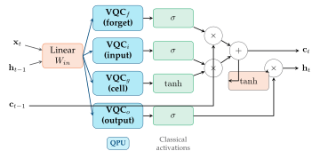
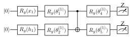

Chapter 12: Quantum Recurrent Networks and QLSTM¶
Sequence modeling is central to NLP, time series analysis, and control. Classical RNNs and LSTMs process sequences by maintaining a hidden state that is updated at each timestep. Quantum analogues replace the classical hidden state and gate operations with quantum states and parameterized quantum circuits, potentially enabling richer memory and expressibility.
Learning Objectives
By the end of this chapter, you will be able to:
-
Describe the QLSTM architecture and its gate operations
-
Distinguish quantum and classical components of the hybrid model
-
Implement a QLSTM in PennyLane for sequence classification
-
Apply quantum reservoir computing (QRC) for temporal tasks
-
Benchmark QLSTM against classical LSTM on sequence datasets
12.1 Classical LSTM Review¶
An LSTM processes sequence \((\mathbf{x}_1,…,\mathbf{x}_T)\) via:
The gates control information flow via sigmoid activations. Vanishing gradients in deep RNNs are mitigated by the cell state \(\mathbf{c}_t\).
12.2 QLSTM Architecture¶

The Quantum LSTM (Chen et al., 2022) (Chen et al. 2022) replaces the classical linear transformations \(\mathbf{W}[\mathbf{h},\mathbf{x}]+\mathbf{b}\) in each gate with a parameterized quantum circuit:
QLSTM equations (replacing linear layers with VQCs):
Each VQC gate has its own parameters \(\boldsymbol{\theta}_{\text{gate}}\). The cell state \(\mathbf{c}_t\) and hidden state \(\mathbf{h}_t\) remain classical vectors.
Tip
The QLSTM is a hybrid architecture: quantum circuits compute gate activations, but the state update logic (equations for \(\mathbf{c}_t\), \(\mathbf{h}_t\)) is purely classical. This is practical on NISQ hardware since only small quantum circuits are needed.
12.3 VQC Gate Design for QLSTM¶
Each VQC gate receives concatenated input \([\mathbf{x}_t; \mathbf{h}_{t-1}]\) and returns scalar outputs (one per hidden dimension \(h\)):
Input encoding: Angle encoding on \(n_{\text{in}}\) qubits:

Solved Example 12.1
Problem: For a 2-qubit QLSTM forget gate with angle encoding of \([x_t, h_{t-1}]\) and 1 strongly entangling layer, how many parameters does the gate have?
Solution: Strongly entangling layer on 2 qubits: \(2\times3 = 6\) parameters (each qubit gets 3 rotation angles: \(R_z R_y R_z\)). Plus CNOT: no parameters. Total per gate: \(6\) parameters. For 4 QLSTM gates (f, i, c, o): \(4\times6=24\) parameters.
Classical LSTM equivalent: for hidden size \(h=2\) and input size \(d=1\): \(4\times(h\cdot(h+d)+h) = 4\times(2\cdot3+2)=32\) parameters. QLSTM uses fewer parameters but requires 4 quantum circuit evaluations per timestep.
12.4 Quantum Reservoir Computing¶
Quantum Reservoir Computing (QRC) (Fujii and Nakajima 2017) is a simpler alternative to QLSTM: use a fixed (non-trainable) random quantum circuit as the reservoir, and train only a classical readout layer.
Architecture:
-
Input: Encode \(\mathbf{x}_t\) into initial qubit rotations
-
Reservoir: Apply fixed random entangling unitary \(U\) (not trained)
-
Readout: Measure all qubits, apply trained linear readout \(\mathbf{W}_{\text{out}}\)
Memory capacity: The quantum system retains memory of past inputs through its entangled state. For an \(n\)-qubit reservoir, memory capacity \(\propto n\).
Note
QRC requires no quantum gradient computation — only the classical readout is trained. This makes it extremely hardware-friendly and gradient-free. However, it cannot be fine-tuned for specific tasks as well as trained QLSTM.
12.5 Implementation¶
import pennylane as qml
import numpy as np
import torch
import torch.nn as nn
n_qubits_in = 4
dev = qml.device("default.qubit", wires=n_qubits_in)
@qml.qnode(dev, interface="torch", diff_method="parameter-shift")
def vqc_gate(inputs, weights):
"""VQC for one QLSTM gate (forget/input/output/cell)."""
qml.AngleEmbedding(inputs, wires=range(n_qubits_in), rotation='Y')
qml.StronglyEntanglingLayers(weights, wires=range(n_qubits_in))
return [qml.expval(qml.PauliZ(i)) for i in range(n_qubits_in)]
weight_shape = {"weights": (2, n_qubits_in, 3)}
class QLSTMCell(nn.Module):
def __init__(self, input_size, hidden_size, n_qubits=4):
super().__init__()
self.hidden_size = hidden_size
# One VQC per gate
self.vqc_f = qml.qnn.TorchLayer(vqc_gate, weight_shape)
self.vqc_i = qml.qnn.TorchLayer(vqc_gate, weight_shape)
self.vqc_c = qml.qnn.TorchLayer(vqc_gate, weight_shape)
self.vqc_o = qml.qnn.TorchLayer(vqc_gate, weight_shape)
# Classical projections
self.proj_in = nn.Linear(input_size + hidden_size, n_qubits)
self.proj_out = nn.Linear(n_qubits, hidden_size)
def forward(self, x, hidden):
h, c = hidden
combined = torch.cat([x, h], dim=-1)
q_input = torch.tanh(self.proj_in(combined)) * np.pi # scale to [-pi, pi]
# Quantum gate evaluations
f = torch.sigmoid(self.proj_out(self.vqc_f(q_input)))
i = torch.sigmoid(self.proj_out(self.vqc_i(q_input)))
g = torch.tanh( self.proj_out(self.vqc_c(q_input)))
o = torch.sigmoid(self.proj_out(self.vqc_o(q_input)))
# Cell state update
c_new = f * c + i * g
h_new = o * torch.tanh(c_new)
return h_new, (h_new, c_new)
class QLSTMClassifier(nn.Module):
def __init__(self, input_size=1, hidden_size=4, n_classes=2):
super().__init__()
self.hidden_size = hidden_size
self.cell = QLSTMCell(input_size, hidden_size)
self.fc = nn.Linear(hidden_size, n_classes)
def forward(self, seq):
# seq: (batch, time, features)
B, T, _ = seq.shape
h = torch.zeros(B, self.hidden_size)
c = torch.zeros(B, self.hidden_size)
for t in range(T):
h, (h, c) = self.cell(seq[:, t, :], (h, c))
return self.fc(h) # classify on final hidden state
# Quick test
model = QLSTMClassifier(input_size=1, hidden_size=4, n_classes=2)
x = torch.randn(4, 10, 1) # batch=4, seq_len=10, features=1
print("QLSTM output shape:", model(x).shape)
n_params = sum(p.numel() for p in model.parameters())
print(f"Total parameters: {n_params}")
12.6 Chapter Summary¶
Chapter Summary
-
QLSTM: Each LSTM gate (forget/input/cell/output) is replaced by a VQC. Cell state and hidden state remain classical. Hybrid architecture.
-
Training: BPTT through the classical cell state + PSR for VQC gradients. 4 VQC evaluations per timestep per gate.
-
Expressibility: VQC gates can represent richer nonlinear functions than classical sigmoid/tanh in some regimes.
-
QRC: Fixed random quantum circuit as reservoir; only classical readout trained. Gradient-free and hardware-friendly.
-
Applications: NLP (sentence classification), time series forecasting, quantum state tomography sequences.
Exercises
Exercise . Draw the QLSTM architecture diagram showing the 4 VQC gates, classical cell state update, and hidden state output for one timestep.
Exercise . Compare the number of parameters for a classical LSTM with hidden size \(h=8\), input size \(d=2\) vs. a QLSTM with 4-qubit gates and same hidden size.
Exercise . Train a QLSTM for the task of classifying whether a sine wave sequence has frequency above or below 0.5 Hz. Generate 200 sequences of length 20. Compare with a 2-layer classical GRU.
Further Reading
-
Chen et al. (2022) (Chen et al. 2022) — QLSTM for sequence learning
-
Fujii & Nakajima (2017) (Fujii and Nakajima 2017) — quantum reservoir computing
-
Bausch (2020) — recurrent quantum neural networks